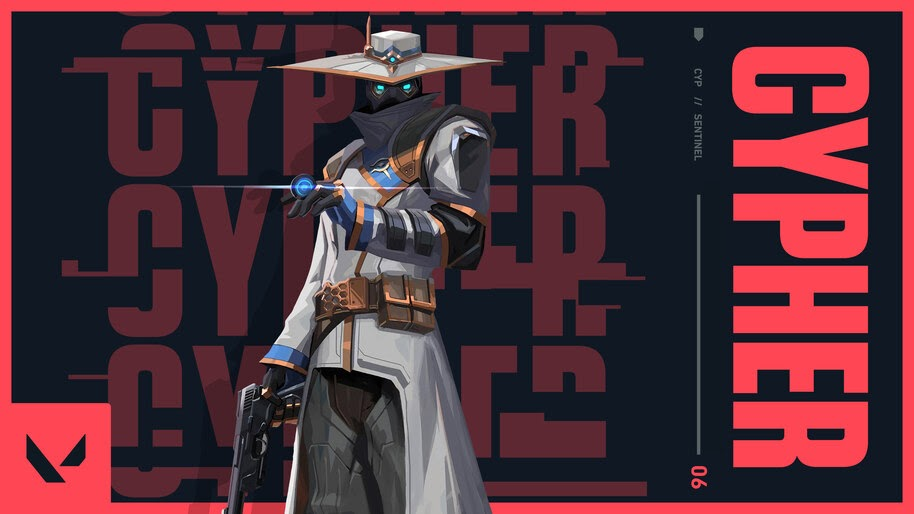

Ability 1(tripwire)-This ability is a wire that is placed between walls and only walls,If the enemies come between the wire,they will not be able to move foward and if they do not break the wire they get concussed and also damaged.This can be used in the buy phase as well.U can use this at the places the attackers push to stop them,giving time for ur team to rotaate.It also can be picked up if no enemy comes in contact with the wire but it gets disable upon ur death.
Ability 2(cybercage)-This ability is a device that can be released and activated when u want by pressing the ability button again.This ability is a smoke that comes from a device.This is a cylindrical smoke and if anyone enters this smoke they won't be able to see through the smoke and hear anything which is going on outside the smoke.
Ability 3(camera)-This ability is a camera that can be attached to walls but not on the ground.To take control of the cam just press the ability key once..It can be taken but there is 16 second timeout before u can use it again.U can shoot a dart from the cam that tags enemies that reveals their location per 5 seconds.They can remove the dart.The cam can be destroyed.When the cam is not in use the cam camoflauges with its surroundings.
Ability 4(neural theft)-Use on a fresh enemy corpse to throw Cypher's hat. After a brief delay, all enemy players' locations will be revealed once.